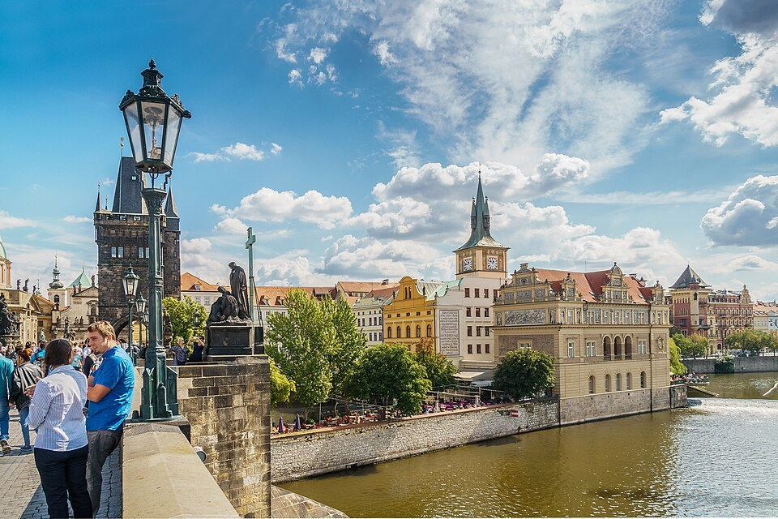

Károly híd (Karlův most)
A Károly hídra lépve most néhány pillanatra a folyóra figyeljünk. A Moldva két partját összekötő átkelő hosszú ideig a város életének nélkülözhetetlen része volt. Ma gyalogosok sétálnak rajta, régen azonban áruk, állatok és járművek is ezen az útvonalon haladtak. A hídról nyíló látvány mellett ezért a hely mindennapi közlekedési jelentőségét is érdemes elképzelni.
Az új kőhíd építése IV. Károly támogatásával 1357-ben kezdődött. Elődje, a Judit híd egy nagy árvízben súlyosan megrongálódott. Az új építmény tartós kapcsolatot teremtett a városrészek között. Egyúttal az uralkodói útvonalnak is része lett, amely az Óvároson át a várhoz vezetett.
A szobrok többsége jóval később, főként a barokk korban került a hídra. Ettől az átkelő szinte szabadtéri szoborgalériává alakult. Sok ma látható alkotás másolat, mert az eredetieket a szabadban erős károsodás érte. A másolatok ezért nem a történet meghamisítását, hanem a képi együttes és a műtárgyak együttes megőrzését szolgálják.
Nepomuki Szent János figuráját különösen sok látogató keresi. A szent emlékezete a folyóba vetés történetéhez és a csillagok motívumához kapcsolódik. A gyónási titokról szóló ismert elbeszélés mellett politikai és egyházi konfliktusok is hozzátartoztak az életéhez. A legendák és a történeti háttér itt egymás mellett formálták az emlékezetet.
A híd két végén álló tornyok különböző irányokból keretezik a várost. Álljunk meg néha úgy, hogy nem a vár felé, hanem az Óváros irányába nézünk. A folyó, a partfalak és a tornyok együtt egészen más kompozíciót adnak. A legismertebb fényképezési irányokon túl így újabb prágai városképeket fedezhetünk fel.
A hídon a tömeg könnyen magával sodorhat bennünket. Érdemes egy nyugodtabb szakaszon félreállni, és megfigyelni a szobrok magasságát, a kövek felületét és a víz mozgását. A kora reggeli vagy esti fény különösen sokat változtathat az élményen. Ugyanaz a híd egyetlen napon belül is egészen eltérő arcát tudja megmutatni.
50.086501, 14.411724